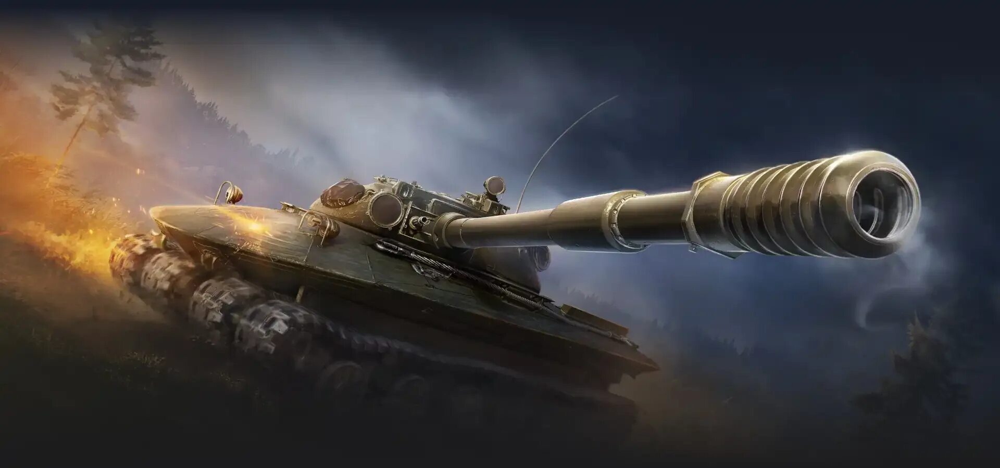
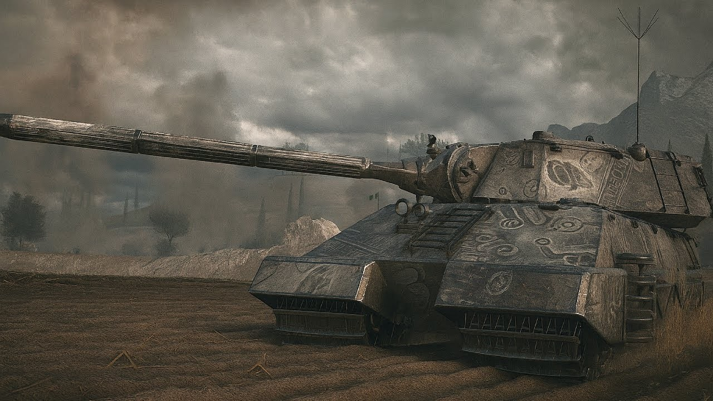

01
Индивидуальность
Особая механика
Активная способность, пассивный бонус или ситуативное усиление — новый инструмент всегда связан с боевой ролью машины.
World of Tanks / Update 2.0
Тридцать пять машин. Четыре боевые роли. Одиннадцатый уровень меняет правила игры, оставляя в строю главное — мастерство командира.

Эволюция, а не революция
XI уровень продолжает ветки культовых «десяток», но даёт каждой машине собственный тактический характер. Здесь недостаточно просто знать ТТХ: важно понимать, когда включать сильную сторону машины.
Фильтруйте по роли, ищите по названию и открывайте карточки, чтобы увидеть наследника, стиль игры и особую механику.
Машины с таким названием не найдены.
У каждой машины XI уровня есть особая механика. Она расширяет привычную роль, а не отменяет её.
Индивидуальность
Активная способность, пассивный бонус или ситуативное усиление — новый инструмент всегда связан с боевой ролью машины.
Настройка
До 25 узлов без штрафов. Решайте, что важнее: огневая мощь, мобильность, выживаемость или усиление уникальной механики.
Признание
Откройте все узлы, проводите бои и получайте эксклюзивные элементы: объёмный стиль, кожух ствола и счётчик статистики.
Подробнее об эволюции ↗
Наследник Maus
Сверхтяжёлый танк, созданный пережить всех. Его дополнительное вооружение позволяет стрелять осколочно-фугасными снарядами из двух тактических орудий, пока перезаряжается основное.
Названия и образы XI уровня отсылают к реальным инженерным школам и истории бронетехники. В игре это не музейные экспонаты, а отправная точка для новых игровых ролей.